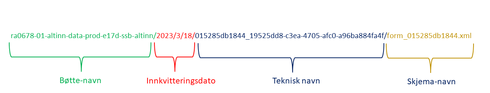

Altinn 3

Frem mot 2026 skal alle skjema-undersøkelser i SSB som gjennomføres på Altinn 2 flyttes over til Altinn 3. Skjemaer som flyttes til Altinn 3 vil motta sine data på Dapla, og ikke på bakken som tidligere. Datafangsten håndteres av Team SUV, mens statistikkseksjonene henter sine data fra Team SUV sitt lagringsområde på Dapla. I dette kapitlet beskriver vi nærmere hvordan statistikkseksjonene kan jobbe med Altinn3-data på Dapla. Kort oppsummert består det av disse stegene:
- Statistikkprodusenten avtaler med Team SUV og skjematuviklerne om overføring av skjema fra Altinn 2 til Altinn 3.
- Når statistikkprodusentene får beskjed om at Altinn3-skjemaet skal sendes ut til oppgavegiverne, så må de opprette et Dapla-team.
- Når Dapla-teamet er opprettet, så ber de Team SUV om å gi statistikkteamet tilgang til dataene som har kommet inn fra Altinn 3. I tillegg ber de om at Team SUV gir tilgang til teamets Transfer Service instans. 1
- Statistikkprodusenten setter opp en automatisk overføring av skjemadata med Transfer Service, fra Team SUV sitt lagringsområde over til Dapla-teamet sin kildebøtte.
- Statistikkprodusentene kan begynne å jobbe med dataene i Dapla. Blant annet tilbyr Dapla en automatiseringstjeneste man kan bruke for å prosessere dataene fra kildedata til inndata2.
Under forklarer vi mer med mer detaljer hvordan man går frem for gjennomføre steg 4-5 over.
Forberedelse
Når skjema-dataene kommer inn fra Altinn 3 til Team SUV sitt lagringsområde, så er det en del ting som er verdt å tenke på:
- Hvordan er filene organisert hos Team SUV?
Filstrukturen der Team SUV lagrer dataene som kommer inn fra Altinn 3, har en klar struktur. Du kan selv gå inn å kikke på dataene, enten fra Jupyter eller Google Cloud Console, og bli bedre kjent med strukturen3. Figur 1 viser en hvordan en typisk filsti ser ut på lagringsområdet til Team SUV. Det starter med navnet til bøtta som Team SUV har opprettet for skjemaet. Deretter viser den innvitteringsdato, deretter et teknisk navn, og til slutt selve skjemanavnet.

Hvordan organisere dataene i din kildebøtte?
Når vi bruker Transfer Service til å synkronisere innholdet i Team SUV sitt lagringsområde til Dapla-teamet sitt lagringsområde, så er det mest hensiktmessig å fortsette å bruke mapppe-strukturen som Team SUV har. Grunnen er at vi ikke kan legge på noe logikk som lager en ny struktur. Tjenesten bare kopierer over data. Men du kan kan lage et nytt toppnivå-mappe som du ønsker at dataene skal synkroniseres til. F.eks. at alle Altinn-dataene legger seg inn i en mappe som heteraltinn. Det er spesielt nyttig hvis du har flere datakilder som skal ligge i samme kildebøtte.Unike skjemanavn
Skjemanavnet du ser i Figur 1 er unike. Dvs. at hvis en oppgavegiver sender inn flere skjemaer på samme dag, så er fortsatt skjemanavnet unikt. Det er viktig å være klar over når man bruker automatiseringstjenesten for kildedata senere. Siden tjenesten trigges per fil, og man er avhengig av unike navn for å ikke skrive over filer, så er det nyttig å vite at man kan videreføre skjemanavnet i overgangen fra kildedata til inndata.
Transfer Service
Transfer Service er en tjeneste som kan brukes til å synkronisere innholdet mellom bøtter på Dapla, samt mellom bakke og sky. Når du skal ta i bruk tjenesten for å overføre data mellom en bøtte fra Team SUV sitt prosjekt altinn-data-prod, til en kildedata-bøtte i Dapla-teamet ditt, så gjør du følgende:
- Følg denne beskrivelsen hvordan man setter opp overføringsjobber.
- Etter at du har trykket på
Create Transfer Jobvelger du Google Cloud Storage p√• begge alternativene under Get Started. Deretter g√•r du videre ved √• klikke p√• Next Step. - Under Choose a source s√• skal du velge hvor du skal kopiere data fra. Trykk p√• Browse. I vinduet som dukker opp trykker du p√• üîª-ikonet ved siden av Project ID. I søkevinduet som dukker opp søker du opp altinn-data-prod og trykker p√• navnet. Da f√•r du listet opp alle bøttene i altinn-data-prod prosjektet. Til slutt trykker du p√• bøtta som Team SUV har opprettet for undersøkelsen4 og klikker Select til nederst p√• siden. Trykk deretter Next step for √• g√• videre.
- Under Choose a destination s√• skal du velge hvor du skal kopiere data til. Dette steget er ganske likt som forrige, men du skal n√• velge ditt eget projekt og kildebøtta der. Trykk p√• Browse. I vinduet som dukker opp trykker du p√• üîª-ikonet ved siden av Project ID. I søkevinduet som dukker opp søker du opp prod-<ditt teamnavn> og trykker p√• navnet. Da f√•r du listet opp alle bøttene i ditt team sitt prosjekt. Velg kildebøtta som har navnet ssb-prod-<teamnavn>-data-kilde. Hvis du ønsker √• kopiere data til en undermappe i bøtta, s√• trykker du p√• >-ikonet ved bøttenavnet og velger ønsket undermappe5. Til slutt trykker du p√• Select til nederst p√• siden. Trykk deretter Next step for √• g√• videre.
- Under Choose how and when to run job velger du Run with custom frequency og Starting now i Batch-modus. Hvis du ønsker å overføre så ofte som mulig, så velger du Custom frequency og Repeat every 1 Hours. Til slutt trykker du Next Step nederst på siden.
- Under Choose Settings så legger du til en kort beskrivelse av jobben du har opprettet. Under de andre valgene kan du gjøre følgende:
- Under Advanced transfer Options trenger du ikke gjøre noen endringer.
- Under When to overwrite kan du velge If different.
- Under When to delete kan du velge Never.
- Under Manifest trenger du ikke huke av.
- Under Logging options velger du samme som vist i Figur 2.

Til slutt trykker du Create for å aktivere tjenesten. Den vil da sjekke Team SUV sin bøtte hver time og kopiere over alle filer som ikke allerede eksisterer statistikkteamets kildebøtte.
Automatiseringstjeneste for kildedata
Når du har satt opp Transfer Service til å kopiere over filer fra Team SUV sin bøtte til statistikkteamets kildebøtte, så vil det potensielt komme inn nye skjemaer hver time. Disse kan du lese inn i Jupyter og jobbe med hvis du er kildedata-ansvarlig i teamet. Hvis du ikke er det så må du vente til dataene er tilgjengeliggjort i produkt-bøtta til teamet.
Siden få personer innehar rollen som kildedata-ansvarlig så er det laget en automatiseringstjeneste som kan bearbeide alle filer som kommer inn i kildebøtta. Den lar deg kjøre et python-script på alle filer som kommer inn i kildebøtta.
Tips og triks
I denne delen deles noen tips og triks for å jobbe med Altinn3-dataene på Dapla. Fokuset vil være på hvordan du kan lese inn og transformere xml-filer fra skjema-dataene.
Liste ut innhold i en mappe
For å se innholdet i en mappe gir det mest mening å bruke Google Cloud Console. Her kan du se både filer og mapper i et pek-og-klikk grensesnitt. Men du kan ikke se på innholdet i filene der. Til det må du bruke Jupyter.
Anta at vi ønsker å liste alle som leverte skjema den 10. mars 2023. Da kan vi bruke gcsfs til å gjøre det6:
from dapla import FileClient
fs = FileClient.get_gcs_file_system()
file_path = "gs://ra0678-01-altinn-data-prod-e17d-ssb-altinn/2023/3/10"
xml_files = []
for root, dirs, files in fs.walk(file_path):
for file in files:
if file.endswith(".xml"):
xml_files.append(f"{root}/{file}")
# Print the list of parquet files
xml_filesHer bruker vi fs.walk()-funksjonen fra gcsfs til å loope gjennom alle undermapper av file_path, og legge alle filer som slutter med .xml til listen xml_files. Dermed har vi et Python-objekt som kun brukes til å hente inn de filene vi ønsker. Vi bruker da det vi vet om mappestrukturen i Team SUV sin bøtte som vi så tidligere i Figur 1.
Printe XML i Jupyter
Noen ganger kan det være nyttig å se en xml-fil direkte. Da kan vi lese den inn i Jupyter og printe den ut. Her er et eksempel på hvordan vi kan gjøre det, samtidig som vi formatterer den med xml.dom.minidom:
import xml.dom.minidom
from dapla import FileClient
from IPython.display import Markdown, display
file_path = "gs://ra0678-01-altinn-data-prod-e17d-ssb-altinn/2023/3/24/28c34dce4232_e7bed8a4-def5-42dc-b1e2-b9fc66beb769/form_28c34dce4232.xml"
def print_file():
fs = FileClient.get_gcs_file_system()
with fs.open(file_path, mode="r") as f:
single_xml = f.read()
dom_tree = xml.dom.minidom.parseString(single_xml)
pretty_xml_data = dom_tree.toprettyxml()
display(Markdown("```xml\n{}\n```".format(pretty_xml_data)))Fra XML til Pandas DataFrame
De færreste ønsker å jobbe direkte med XML-filer. Derfor er det nyttig å kunne transformere XML-filene til et mer brukervennlig format, f.eks. en Pandas Dataframe. Her er et eksempel på hvordan vi kan gjøre det med Pandas:
import xml.etree.ElementTree as ET
import pandas as pd
from dapla import FileClient
def single_xml_to_dataframe(file_path: str) -> pd.DataFrame:
fs = FileClient.get_gcs_file_system()
with fs.open(file_path, mode="r") as f:
single_xml = f.read()
root = ET.fromstring(single_xml)
intern_info = root.find("InternInfo")
kontakt = root.find("Kontakt")
skjemadata = root.find("Skjemadata")
data = []
all_tags = set()
for element in intern_info:
all_tags.add(element.tag)
for element in kontakt:
all_tags.add(element.tag)
for element in skjemadata:
all_tags.add(element.tag)
for tag in all_tags:
element = intern_info.find(tag)
if element is None:
element = kontakt.find(tag)
if element is None:
element = skjemadata.find(tag)
if element is not None:
value = element.text
data.append(value)
else:
data.append(None)
# Include the full path to the XML file in the data list
data.append(file_path)
# Create the DataFrame inside the function
df = pd.DataFrame([data], columns=list(all_tags) + ["pathToXmlFile"])
path_to_xml_file_split = df["pathToXmlFile"].str.split("/")
return df
# Run the function
file_path = "gs://ra0678-01-altinn-data-prod-e17d-ssb-altinn/2023/3/24/28c34dce4232_e7bed8a4-def5-42dc-b1e2-b9fc66beb769/form_28c34dce4232.xml"
df = single_xml_to_dataframe(file_path=file_path)I funksjonen så søker vi etter alle elementer under taggene intern_info, kontakt og skjemadata. Dvs. at vi lager en dataframe med en rad, der vi tar med all data fra xml-filen. Til slutt legger vi til en kolonne med filstien til filen. Det kan være nyttig senere hvis man gå tilbake til xml-filen for å sjekke om konverteringen til en dataframe er riktig.
Funksjonen single_xml_to_dataframe() kan brukes til å loope over en liste med filstier (vi viste hvordan man lager en slik liste tidligere i kapitlet). Men et typisk problem som vil oppstå da er at xml-filene har forskjellig antall elementer i seg, som gir dataframes med ulikt antall kolonner, og derfor vil ikke Pandas vite hvordan man konkatinerer disse. For å fikse dette må du modifisere funksjonen til å ta høyde for dette.
Fotnoter
Forslag til e-post til Team SUV etter at teamet er opprettet:
Vi har opprettet et Dapla-tema som heter <ditt teamnavn> for å jobbe med skjema <RA-XXXX>. Kan dere gi oss tilgang til riktig lagringsområde og også gi vår Transfer Service lesetilgang.↩︎En typisk prosessering som de fleste vil ønske å gjøre er å konvertere fra xml-formatet det kom på, og over til parquet-formatet.↩︎
Du kan gå inn i Google Cloud Console og søke opp prosjektet til Team SUV som de bruker for å dele data. Det heter altinn-data-prod, og du finner bøttene ved å klikke deg inn på Cloud Storage↩︎
Bøttenavnet starter alltid med RA-nummeret til undersøkelsen.↩︎
Alternativt oppretter du en mappe direkte vinduet ved å trykke på mappe-ikonet med en +-tegn i seg.↩︎
For å autentisere seg mot GCS kan vi bruke AuthClient fra dapla-toolbelt.↩︎